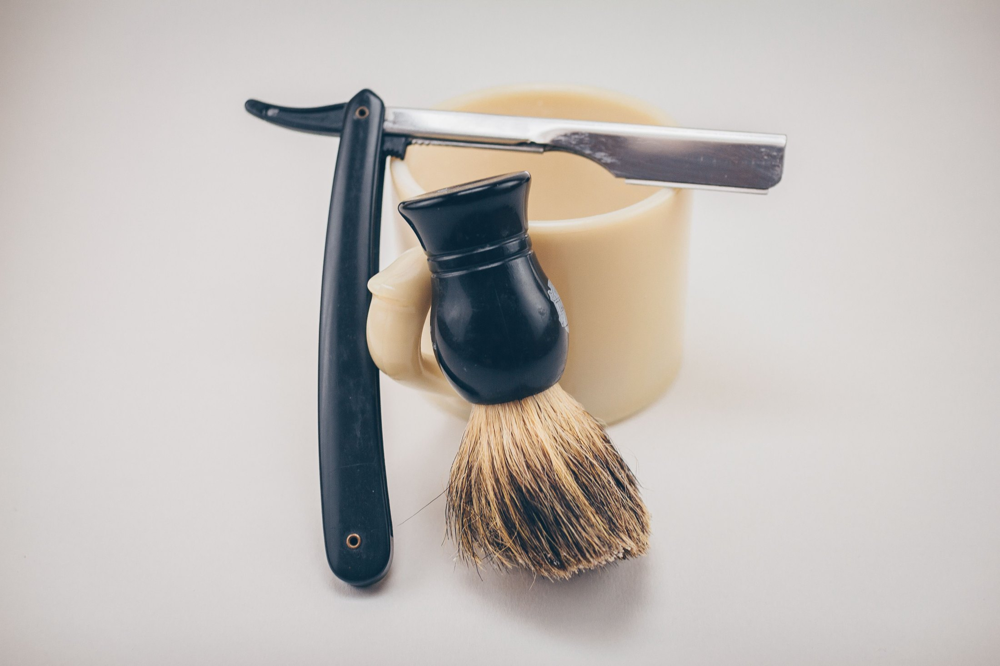
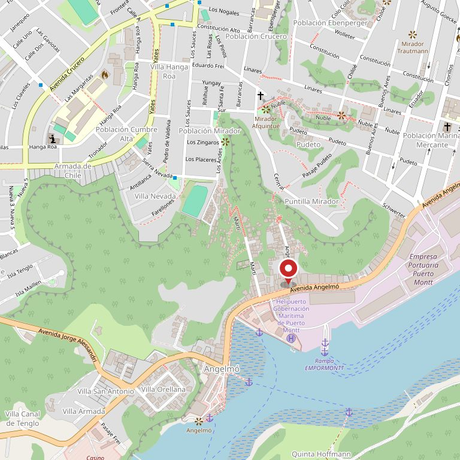

Av. Angelmó 2138 · Puerto Montt
La hora que pide, la hora que le dan.
Barberos con más de ocho años de oficio, a pasos de Angelmó. Abajo está cada corte con el tiempo real que ocupa la silla — para que sepa si alcanza en la hora de colación o no.
La barbería en cuatro datos
- +8años de oficio por barbero
- 5servicios en la carta de acá abajo
- 10:00–20:30de lunes a sábado, sin cerrar a mediodía
- DMla única forma de pedir hora hoy
La pieza que ninguna barbería de la zona tiene
Cada corte, con el tiempo que ocupa la silla.
«¿Cuánto se demora?» es la pregunta que más se hace por DM y la que nunca está escrita. Acá está, como el tablero de zarpes del puerto. Los tiempos van como ejemplo hasta que la barbería los confirme, y los valores no están: ésos los pone el local.
| Servicio | Silla | Qué incluye |
|---|---|---|
| Corte clásico | 30 min | Tijera y máquina, lavado y peinado. |
| Corte con degradado | 45 min | Degradado a máquina por pasos, perfilado y acabado. |
| Barba | 25 min | Perfilado, toalla caliente y navaja. |
| Corte + barba | 60 min | El combinado. La hora completa, en una sola sentada. |
| Diseño de cejas | 15 min | Perfilado con navaja. Se puede sumar a cualquier corte. |
Sesenta minutos de silla no es lo mismo que una hora de espera: el tablero dice cuánto dura su turno, no cuántos hay adelante. Esa diferencia es la que hace que la gente pregunte dos veces.

La silla es una sola. La hora, también.
Por eso la reserva importa: acá no hay dos sillones esperando a que alguien se acuerde de venir.
Antes de sentarse
El mismo corte tiene cinco nombres.
«Cortito a los lados» quiere decir una cosa a los veinte años y otra a los cincuenta, y el barbero no adivina. Cuatro maneras de decirlo para que el corte salga a la primera.
-
Traiga una foto
Es la forma más segura y la que menos se discute. Sirve una del teléfono, aunque sea suya de hace tres meses.
-
Diga el número de la máquina
Los lados se piden por número: el 0 es al ras y de ahí va subiendo. Si no sabe cuál le hicieron, diga «el mismo de la vez pasada».
-
Diga cuánto quiere que le dure
«Que me aguante un mes» le dice más al barbero que «cortito», porque define el largo de arriba.
-
Diga qué no le gustó del último
Corregir es más fácil que describir. Con eso el barbero sabe qué evitar antes de encender la máquina.
Esto es oficio de barbería, no una promesa del local: está escrito acá para que el mensaje que se manda por Instagram llegue completo y no haya que preguntar cuatro veces.


Av. Angelmó 2138
A pasos del puerto, no del centro.
Angelmó es la avenida por la que pasa todo el que va al mercado y a las cocinerías. Estar acá significa que el cliente no viene sólo del barrio: viene de paso, y decide en el momento.
Para el que decide en el momento, media hora de diferencia lo es todo. Por eso el tablero de arriba está antes que cualquier otra cosa en esta página.
- Dirección
- Av. Angelmó 2138, Puerto Montt
- Horario
- Lunes a sábado, 10:00 a 20:30
- Dónde están hoy
- Instagram @caballerosptm
- Teléfono
- No está publicado en ninguna parte

«Ocho años de oficio no se ven en el corte. Se ven en el que no hubo que arreglar después.»
El oficio
Máquina, tijera y navaja.


Pedir hora
El mensaje armado, listo para pegar.
Instagram no deja mandar un texto ya escrito desde un enlace, así que esta página hace lo siguiente mejor: arma el mensaje completo y lo copia. Se pega en el chat y listo — con el servicio, el día y el nombre adentro, que es lo que evita las cuatro respuestas de ida y vuelta.
Cuando la barbería tenga un número de WhatsApp publicado, este mismo formulario abre el chat con el texto ya puesto. El código está listo: falta el número.
Armar el mensaje
Sin JavaScript el enlace al Instagram sigue funcionando: es un enlace normal. Lo único que se pierde es que el texto se arme solo.

Para el dueño
Qué es esto y qué falta.
Qué es
Una propuesta de sitio web hecha por nuestra cuenta. Caballeros no la encargó ni la ha revisado. Dimos por cierto sólo lo que ustedes publican: la dirección de Angelmó 2138, el horario de 10:00 a 20:30 de lunes a sábado y los más de ocho años de oficio de los barberos.
Qué es ejemplo
Los tiempos de silla del tablero, y las cuatro maneras de pedir un corte, que son oficio general y no una promesa del local. Las tres fichas de barberos están vacías a propósito: no inventamos nombres de personas. Y no hay ni un precio en toda la página.
Qué cambiaría la página entera
Los tiempos reales y una foto por barbero con su nombre. Con eso el cliente pide hora con alguien, que es lo que sube la reserva. Y un número de WhatsApp: el formulario ya está escrito para abrir el chat directo.